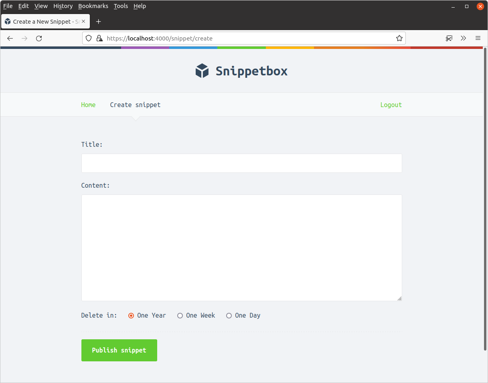

مقدمه
در این کتاب ما یک برنامه وب به نام Snippetbox میسازیم که به کاربران اجازه میدهد تکههای متن را paste و به اشتراک بگذارند — چیزی شبیه به Pastebin یا Gists گیتهاب. در پایان ساخت، چیزی شبیه به این خواهد بود:

برنامه ما از یک صفحه وب ساده شروع میشود. سپس با هر فصل، گامبهگام آن را میسازیم تا زمانی که کاربر بتواند تکههای متن را از طریق برنامه ذخیره و مشاهده کند. این کار ما را از موضوعاتی مانند نحوه ساختاردهی پروژه، مسیریابی (routing) درخواستها، کار با پایگاه داده، پردازش فرمها و نمایش ایمن دادههای پویا عبور میدهد.
سپس در ادامه کتاب، حسابهای کاربری را اضافه میکنیم و برنامه را محدود میکنیم تا فقط کاربران ثبتنامشده بتوانند تکههای متن ایجاد کنند. این کار ما را از موضوعات پیشرفتهتری مانند پیکربندی سرور HTTPS، مدیریت نشست (session management)، احراز هویت کاربر (authentication) و میدلور (middleware) عبور میدهد.
قوانین و قراردادها
بلوکهای کد در این کتاب با پسزمینه نقرهای نمایش داده میشوند، مانند مثال زیر. اگر یک بلوک کد به خصوص طولانی باشد، بخشهایی که مرتبط نیستند ممکن است با سه نقطه جایگزین شوند. برای سهولت در دنبال کردن، بیشتر بلوکهای کد یک نوار عنوان در بالا دارند که نام فایلی که کد در آن قرار دارد را نشان میدهد. مانند این:
package main ... // نشان میدهد که بخشی از کد موجود حذف شده است. func sayHello() { fmt.Println("Hello world!") }
دستورالعملهای ترمینال با پسزمینه سیاه نمایش داده میشوند و با نماد دلار شروع میشوند. این دستورات باید روی هر سیستمعامل مبتنی بر Unix، از جمله macOS و Linux کار کنند. خروجی نمونه در زیر دستور به رنگ نقرهای نمایش داده میشود، مانند این:
$ echo "Hello world!" Hello world!
اگر از Windows استفاده میکنید، باید دستور را با معادل DOS جایگزین کنید یا عمل را از طریق رابط گرافیکی عادی Windows انجام دهید.
لطفاً توجه داشته باشید که تاریخها و برچسبهای زمانی نشان داده شده در اسکرینشاتها و خروجی نمونه دستورات فقط برای توضیح هستند. آنها لزوماً با یکدیگر هماهنگ نیستند یا به ترتیب زمانی در طول کتاب پیش نمیروند.
برخی از فصلهای این کتاب با بخش اطلاعات اضافی به پایان میرسند. این بخشها حاوی اطلاعاتی هستند که مرتبط با ساخت برنامه ما نیستند، اما هنوز مهم هستند (یا گاهی اوقات فقط جالب). اگر تازه با Go شروع کردهاید، ممکن است بخواهید این بخشها را رد کنید و بعداً به آنها برگردید.